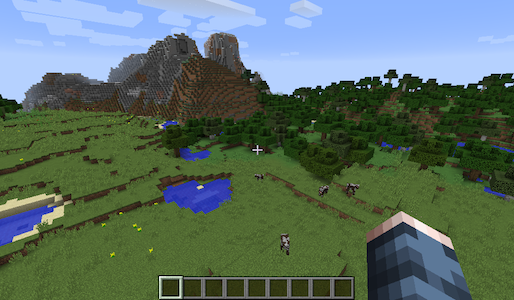

Minecraft

Minecraft is an open-world game with extensive options for modifying the game world.
Pros
- Popular with students.
- Inexpensive.
- Runs on a wide variety of platforms.
- Allows multiplayer interaction.
Cons
- Several different versions that aren’t all interoperable.
- Different versions, vast functionality and constant evolution make it difficult to comprehend all the possibilities for using Minecraft in the classroom.
- Seen as unfashionable by some students.
Recommended For
- Teaching coding to students that are motivated by playing Minecraft.
- Creating interactive, multiplayer simulations for teaching non ICT subjects such as science and geography.
Details
On the surface Minecraft is a game but this description doesn’t really do justice to the diverse possibilities for using Minecraft in classrooms. One of the biggest barriers Minecraft faces is getting people to understand what it is and what it can do because it can be and do so many different things. At first glance Minecraft can appear to be simplistic as its graphics are composed of cubic blocks, however, Minecraft’s block based design allows every block in the game level to be modified which opens up huge possibilities for interacting with the game.
In addition to its open, modifiable nature Minecraft also offers several possibilities for programming behaviour within the game. Firstly, Minecraft has a redstone subsystem that consists of several different block types that can be connected to form basic mechanisms. The behaviour of redstone is very similar to electric circuits and it is possible to build logic gates such as AND and OR. This has led to people building complex devices in Minecraft, such as calculators, purely from redstone components.
Another mechanism for programming Minecraft is commands and command blocks. Minecraft offers a command line that can be used to execute rudimentary commands that modify the game environment such as changing the weather or moving a player to a certain location. The command line behaves very similarly to operating system command line processors such as Unix shells. The command line also has strict syntactic requirements, commands must be typed exactly and this is a great way to introduce students to the strict syntax requirements of general purpose programming languages. In addition to the command line Minecraft has command blocks that can be placed in the game world and execute commands when the player interacts with them. Using command blocks allows for an event driven programming model that would allow students to control behaviours within the game.
The original versions of Minecraft were written in Java which is an interpreted language. This allowed people to reverse engineer the Minecraft code and introduce modifications. A huge community grew up around Minecraft “mods” that altered the basic gameplay of Minecraft and to some extent created completely different games. However, the “mod” scene operates in a morally grey area as it isn’t officially condoned by Microsoft yet it is arguably partly responsible for the huge success of Minecraft. Using Java code and “mod” frameworks students could program Minecraft, however, the legal ramifications are not clear and it is probably best avoided in a school environment. There are organisations offering classes in “modding” Minecraft during school holidays and students that have an interest could be directed to those.
After Microsoft acquired Minecraft in 2014 it set to work creating versions of Minecraft that were natively compiled and therefor ran faster than the interpreted Java versions. However, the faster native versions are unable to be modified which has caused a fracture in the community with many people sticking with the older Java versions of Minecraft because of their ability to run “mods”. In order to appeal to the “mod” market Microsoft has begun introducing methods for modifying Minecraft such as configuration files to alter behaviours and it just recently announced a Code Builder programming facility but this is limited to the Education version.
Whilst Minecraft is great for teaching computational thinking and coding to students that love Minecraft it is also being adopted for teaching outside of the ICT curriculum. The Minecraft Education site has a variety of lessons that have been created in areas such as maths, science and geography. As an example, two science teachers in Perth produced a paper that detailed their efforts to teach Earth science using Minecraft. One of the lessons involved students virtually digging through various stratum the teachers had set up in the ground of the Minecraft world. They reported high levels of engagement and considered the trial a success.
Example
This video covers all the basic circuits and mechanisms that can be developed using redstone in Minecraft.